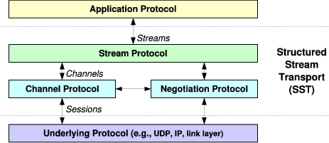
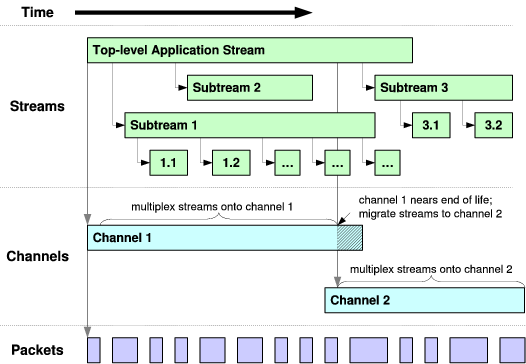
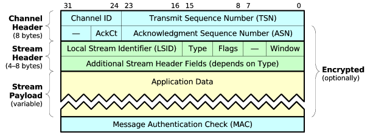
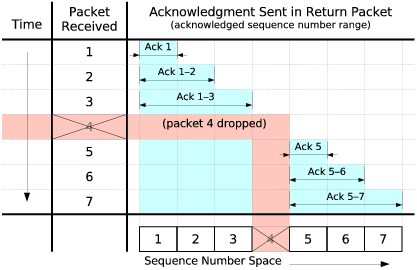
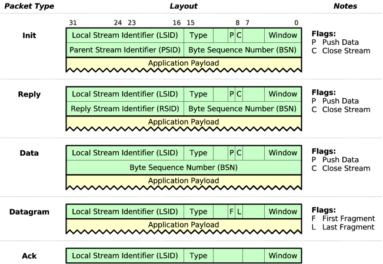
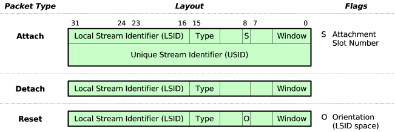
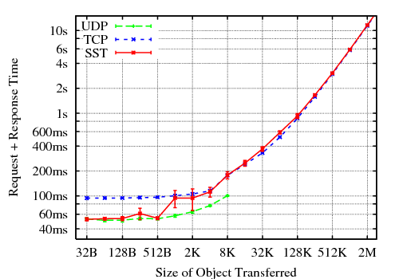
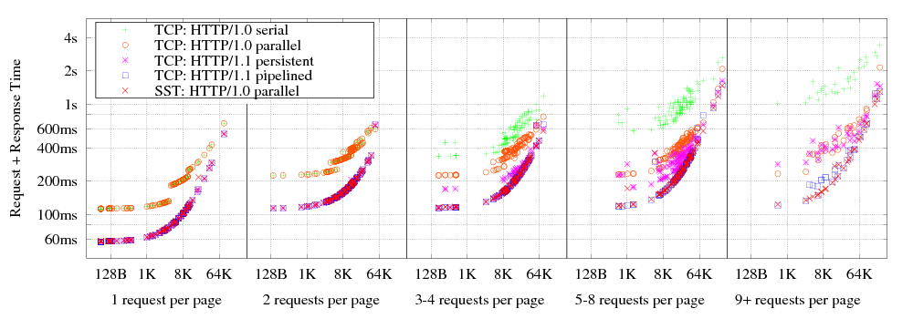
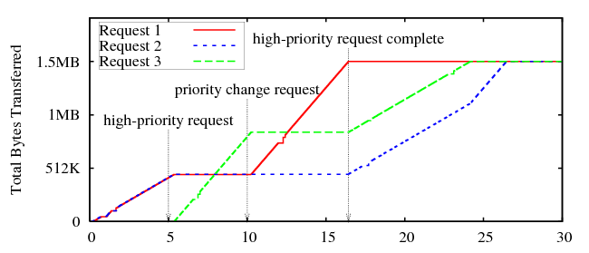

Internet applications currently have a choice between stream and datagram transport abstractions. Datagrams efficiently support small transactions and streams are suited for long-running conversations, but neither abstraction adequately supports applications like HTTP that exhibit a mixture of transaction sizes, or applications like FTP and SIP that use multiple transport instances. Structured Stream Transport (SST) enhances the traditional stream abstraction with a hierarchical hereditary structure, allowing applications to create lightweight child streams from any existing stream. Unlike TCP streams, these lightweight streams incur neither 3-way handshaking delays on startup nor TIME-WAIT periods on close. Each stream offers independent data transfer and flow control, allowing different transactions to proceed in parallel without head-of-line blocking, but all streams share one congestion control context. SST supports both reliable and best-effort delivery in a way that semantically unifies datagrams with streams and solves the classic “large datagram” problem, where a datagram’s loss probability increases exponentially with fragment count. Finally, an application can prioritize its streams relative to each other and adjust priorities dynamically through out-of-band signaling. A user-space prototype shows that SST is TCP-friendly to within 2%, and performs comparably to a user-space TCP and to within 10% of kernel TCP on a WiFi network.
C.2.2 [Computer-Communication Networks]: Network Protocols; C.2.6 [Computer-Communication Networks]: Internetworking—Standards (e.g., TCP/IP)
Algorithms, Design, Performance, Security, Standardization
SST, transport protocols, stream, datagram, reliable, best-effort, web transport, multimedia, mobility, fairness, TCP.
Current Internet transports offer applications a choice between two abstractions: reliable byte streams as in TCP [52] or SCTP [49], or best-effort datagrams as in UDP [41] or DCCP [32]. Streams are convenient for large or long-running activities that must preserve data content and order, such as terminal sessions or file transfers, but datagrams more efficiently support numerous small transactions that need to proceed independently as quickly as possible, such as DNS requests or frames of a media stream. An application with a mixture of many small and a few large transactions faces awkward tradeoffs, because it could benefit from the efficiency of UDP for small transactions but needs TCP to handle the occasional large ones. Using one TCP stream per transaction as in HTTP/1.0 [8] makes poor use of network resources and is unfair to other applications when a client uses many concurrent streams; serializing transactions onto persistent streams increases transaction latency [38]; and implementing pipelining correctly in web servers has proven challenging enough that seven years after the standardization of HTTP/1.1 [19], popular browsers still leave pipelining disabled for compatibility [33 37].
Applications face further tradeoffs because neither streams nor datagrams offer a means to associate related transport instances. Applications such as FTP [42] and SIP [45] associate transport instances manually by passing IP addresses and port numbers in messages, causing protocol fragility and problems traversing NATs [26]. Other applications multiplex many activities onto one TCP stream, as with SSH tunneling [55], but performance suffers from TCP’s total ordering of the multiplexed stream, where one lost packet blocks delivery of all data queued behind it in the stream.
Structured Stream Transport, or SST, addresses these problems of transaction size and instance association by augmenting traditional streams with an explicit hereditary structure. A structured stream provides not only reliable data delivery as in TCP, but also permits the creation of additional lightweight child streams or substreams. When an application spawns a child from an existing stream, SST conveys this parent/child relationship to the remote application, ensuring that only the intended recipient can accept the new stream and preserving its structural context. Each stream delivers data reliably and in order within that stream, with its own receiver-directed flow control, while other streams may proceed independently with no head-of-line blocking. SST shares sequencing, congestion control, and security state among all streams between a pair of hosts, minimizing per-stream state overhead and allowing the application to use as many concurrent streams as convenient to match its logical structure. The application may also create and destroy streams rapidly to match the natural longevity of its transactions, because SST eliminates TCP’s 3-way handshake delay on all streams after the first, and also eliminates the 4-minute TIME-WAIT period on close that can cause TCP state overload [18]. The application can transmit datagrams on an SST stream with best-effort delivery, but SST treats these datagrams as ephemeral substreams that are semantically indistinguishable to the receiving application from ordinary substreams, allowing SST to fall back to stream-oriented delivery for “datagrams” too large to transmit as such without unacceptable probability of loss. Finally, the application can prioritize SST streams relative to each other, giving preference to interactive or multimedia streams over background activities, and applications can use substreams for out-of-band signaling to change priorities mid-stream, e.g., expediting the loading of images in the currently visible area of a web page.
A user-space prototype implementation, running on real and simulated networks, attests to SST’s practicality and utility. The prototype achieves within 10% of the bandwidth of mature native TCP implementations on “consumer-grade” DSL and WiFi connections, and its congestion control is TCP-fair to within ±2%. Under a simulated web browsing workload, using one HTTP/1.0-style transaction per stream with SST achieves the performance of HTTP/1.1 pipelining, with lower application complexity, and more flexibility as demonstrated by a simulation of dynamic Web download prioritization in response to user actions.
The primary contributions of this work are: (a) the structured stream abstraction, (b) a novel protocol design that implements this abstraction by splitting the transport into separate stream and channel layers, and (c) a user-space prototype for easy experimentation and deployment.
The next section introduces SST’s design as seen by applications. Section 3 explores specific ways applications can benefit from structured streams, Section 4 describes SST’s protocol design in detail, and Section 5 experimentally evaluates the performance of the prototype. Section 6 relates SST to prior work, and Section 7 concludes.
This section describes the structured stream abstraction as viewed by an application using SST, leaving technical details of the SST protocol itself to Section 4.
Like a TCP stream [52], an SST stream is a reliable, byte-oriented conversation between applications. Apart from the ability to create substreams, SST streams are semantically almost identical to TCP streams, so porting application protocols from TCP to SST is straightforward.
An application can use an SST stream not only to transfer data but also to “fork off” child streams or substreams. The terms “substream” and “child stream” refer only to hereditary relationships between streams: once created, there is no semantic difference between a “top-level” stream and a substream. SST extends the traditional sockets API with three new operations for creating substreams:
An application calls listen_substream to indicate willingness to accept new streams as children of an existing stream, much as the application would use a traditional listen socket to receive incoming top-level streams. The peer application on the existing stream’s other endpoint may then initiate a substream by calling create_substream on the existing stream. SST notifies the listening application of the incoming substream, and the listener accepts it via accept_substream. Once created and accepted, child streams are independent of and may outlive their parents. SST endeavors to make streams “lightweight enough” for the application to use a new stream for each logical transaction regardless of size, enabling the application to “frame” its protocol data units according to its needs [14].
SST ensures reliability and data ordering within a stream but not between streams, so the loss and retransmission of a data segment on one stream does not delay communication on other streams. If a client issues many requests to a server at once on separate streams, for example, the server may accept several requests concurrently and respond to them in any order, completing “easy” requests quickly without blocking them behind long-running requests submitted earlier. Each stream provides independent flow control, so the receiving application may accept data at different rates on different streams, or accept data continuously on one stream while temporarily blocking the sender on another. SST’s flow control applies to new child streams as well as to stream data, allowing a server to prevent its clients from overloading it with too many concurrent requests.
SST has a send_datagram operation providing best-effort delivery, but SST treats this operation as equivalent to creating a child stream, sending data on it, and closing the child with a short linger timeout to avoid buffering the sent data. SST’s receive_datagram operation is similarly a shorthand for accepting a substream, reading data, and closing the substream. Since an SST “datagram” is semantically just an ephemeral substream, the receiver can accept the substream with accept_substream instead of receive_datagram, and can then read the substream’s content as it would with a normal substream. The receiver gets a connection reset if it ever tries to send on this ephemeral substream. The receiving application thus cannot tell whether the sender invoked send_datagram or the equivalent sequence of operations.
SST can use an optimization described later to deliver best-effort datagrams efficiently and statelessly as in datagram transports such as UDP or DCCP. Because the receiving application cannot tell whether this optimization was used, however, the sending SST is free not to use it when network conditions may not be suitable. If for example a datagram to be sent is large enough that at least one fragment is likely to be lost, given the current loss rate computed from congestion control statistics, SST forgoes the datagram delivery optimization and sends the datagram instead on a “real” substream, transparently to the application. SST thus solves the “large datagram” problem of traditional best-effort services, where datagram loss rates quickly become unacceptable as datagram size increases.
SST may be deployed either at system level as a “native transport” alongside TCP and UDP, or at application level atop UDP. The latter usage allows applications to ship with a library implementation of SST without requiring special privileges or extensions to existing operating systems, and they can use it as they would SSL/TLS [17] or DTLS [43]. Deploying SST atop UDP also allows it to traverse existing NATs that only natively support TCP and UDP.
Since communication security is now essential for most applications on today’s Internet, but IP-layer security [31] is still not widely deployed other than for VPNs, SST provides optional transport-layer security built on standard practices.
To examine the practical benefits of structured streams, this section briefly explores requirements and challenges faced by several classic application protocols. We use these protocols for illustrative purposes only, without implying that specific applications should necessarily be migrated to SST.
FTP [42] modularizes its operation across multiple transport instances: one TCP stream for control signaling and a separate stream for each file transfer. Internet telephony similarly uses a TCP stream for call setup via SIP [45], and separate UDP streams for media delivery via RTP and RTCP [46]. With SST, such applications can use a top-level stream for control and simply open substreams for data communication. Since SST conveys the parent/child relationship on substream creation, the application protocols need not communicate IP addresses or port numbers explicitly to associate the related transport instances, simplifying the application and avoiding difficulties traversing NATs [26].
The need to support transaction-oriented applications efficiently has long been recognized [9 11 13]. In the absence of a general transport satisfying this demand, HTTP/1.0 [8] used a separate TCP connection for each request, each requiring a 3-way handshake and TIME-WAIT period after close, leading to unacceptable overhead as the Web became riddled with small images. Since TCP congestion control distributes available bandwidth per stream, opening many concurrent TCP connections is also unfair to other users [3]. HTTP/1.1 [19] allows reuse of a TCP connection for successive requests, reducing the total number of connections, with the disadvantage of serializing requests and often making pages take longer to load [38]. In theory requests may be pipelined to improve latency, but seven years after the publication of HTTP/1.1, today’s common browsers still avoid pipelining by default because many servers implement it incorrectly [33 37]. Pipelining also fixes response order to request order, blocking the server from satisfying simple static content requests promptly until it finishes processing dynamic content requests submitted earlier for example.
HTTP could benefit from UDP’s efficiency—particularly for the many conditional GET requests browsers use to test the freshness of cached objects, whose responses are usually small—but HTTP cannot use UDP because responses may be arbitrarily large, and the client has no way of knowing this when it submits the request. SIP supports operation over UDP, but gets into trouble for precisely this reason [24].
With SST, applications can use one stream per transaction, with minimal startup latency on all streams after the first, and without serialization of independent requests or long-term state retention after close. Alternatively, applications can use SST as a best-effort datagram transport, sending requests and replies in separate ephemeral streams, achieving UDP’s statelessness for small messages without UDP’s message size limits. In either case, SST ensures fairness relative to TCP applications that use only one stream, since all of an application’s SST streams between the same pair of hosts share a single congestion control context.
Many application protocols require some form of out-of-band signaling, and traditionally must use ad hoc methods to implement it due to the lack of transport layer support. Internet telephony sets up two separate UDP media sessions, for example: an RTP stream for data and a parallel RTCP stream for related out-of-band signaling [46]. With SST, an application need not set up out-of-band control channels in advance: the application can create a new substream at any time in which to convey an out-of-band message relating to the parent stream, without interfering with the normal operation of the parent. Section 5 explores one experimental use of out-of-band signaling in SST.
|

|
SST consists of three related protocols, organized as shown in Figure 1. The channel protocol is a connection-oriented best-effort delivery service that provides packet sequencing, integrity and privacy protection, selective acknowledgment, and congestion control. The negotiation protocol sets up the channel protocol’s state, negotiating shared security keys and optional features. Finally, the stream protocol builds on the channel and negotiation protocols to implement the reliable structured stream abstraction SST presents to the application. For space reasons this paper focuses on the channel and stream protocols, which are of primary importance for implementing the structured stream abstraction.
Figure 2 illustrates three key communication abstractions that form the interfaces between SST’s layers—packets, channels, and streams—and how instances of these communication abstractions relate to each other over time.
|

|
At the lowest level, SST assumes that the underlying protocol (e.g., IP or UDP) provides only an unreliable, connectionless, unicast packet delivery service, in which packets are independent of each other and have ephemeral lifetimes. Each packet carries some number of bytes, up to the network path’s current maximum transfer unit (MTU), which may change at any time. All communication within a channel or stream ultimately reduces to a series of packets at this level.
On top of this connectionless service SST’s channel protocol builds a connection-oriented packet delivery service. Semantically, the channel protocol’s most important functions are to associate each transmitted packet with a particular connection instance or channel, and to assign monotonically increasing packet sequence numbers to all packets transmitted within a particular channel. The channel protocol also attaches acknowledgment information to packets to determine when packets have arrived successfully, and uses this acknowledgment information internally to implement congestion control at channel granularity. Finally, the channel protocol protects each packet with a message authenticator and an optional encryption wrapper to provide end-to-end security for all packets transmitted over the channel.
The stream protocol builds on this intermediate channel abstraction to provide TCP-like reliable byte streams to the application. The stream protocol handles segmentation and reassembly, retransmission of lost segments, receiver-directed flow control, and substream creation and management. At any point in time, the stream protocol normally multiplexes all streams between the same pair of hosts onto a single channel. The fact that a channel’s sequence number space does not wrap facilitates efficient stream creation and termination, but this property also implies that the stream protocol must migrate long-lived streams from one channel to another to give streams unlimited lifetimes as in TCP.
|

|
Figure 3 shows the layout of a typical SST packet. The channel header is always eight bytes in the current version of SST, and includes fields for channel identification, packet sequencing, and acknowledgment. The stream header is typically four or eight bytes depending on packet type, and contains fields for stream identification, receive window control, and sequencing bytes within a stream. Following the application payload, the channel protocol’s trailing message authenticator is typically four bytes for lightweight TCP-grade security, and 12 or more bytes for cryptographic security.
The next section details SST’s channel protocol, and Section 4.3 describes the stream protocol. Finally, Section 4.4 briefly outlines the negotiation protocol.
The channel protocol’s purpose is to provide transport services that are independent of how the application “frames” its communication into protocol data units [14], or streams in SST. The communication state required to provide these services is thus shareable across many application streams.
SST borrows its connection state, sequencing, and packet security model from IPsec [31] instead of TCP. SST channels are inspired by IPsec security associations, and SST packet sequence numbers work like those IPsec uses for replay protection in the AH and ESP [30]. While IPsec “hides” its sequencing semantics from upper layers in the interest of operating invisibly to existing transports, one of SST’s design insights is that this sequencing model provides a useful building block for new, richer transport services.
The following sections detail the channel protocol’s identification, sequencing, security, acknowledgment, and congestion control services. While one packet submitted to the channel protocol currently translates to one packet in the underlying protocol (e.g., IP or UDP), the channel protocol could be extended to provide services such as chunk bundling [49] or quality-of-service enhancement [50].
SST’s negotiation protocol sets up a channel’s initial state when an application first connects to a target host: each run of the negotiation protocol yields a new channel. As part of channel negotiation, each host assigns a channel ID for each direction of flow. Each transmitted packet includes the receiver’s channel ID, enabling the receiver to find the associated channel instance state; channel IDs thus play the role of IPsec’s security parameters index (SPI). A channel’s ID may be reassigned immediately once the channel’s lifetime ends: the packet authenticator described below rejects old or replayed packets from prior channel instances. As SST’s channel protocol is designed for use by the stream protocol, which needs at most a few active channels at once, the channel ID field may be relatively small (currently 8 bits). Channel zero is reserved for the negotiation protocol.
TCP uses its byte sequence numbers for three different purposes: to distinguish and order data segments within a connection instance, to distinguish segments belonging to entirely different connection instances [53 51], and to protect against packet forgery [5]. SST uses its packet sequence numbers for only the first purpose, leaving the other two functions to an explicit packet authenticator.
Each channel has a 64-bit packet sequence number space for each direction of flow, from which the channel protocol assigns sequence numbers consecutively to each packet transmitted. As in IPsec or DCCP [32], every packet sent gets a new sequence number, including acknowledgments and retransmissions. The sequence number space does not wrap, so if a host sends 264 packets on one channel, it negotiates and switches to a new channel with a fresh space.
Like IPsec’s 64-bit sequence number extension [30], SST authenticates packets using full sequence numbers but transmits only the low bits explicitly in each packet. While the size of the sequence number space limits a channel’s total lifetime, the size of the sequence number field in the packet header limits the window of packets a host may transmit within one round-trip. SST’s current 24-bit sequence number field requires the sender to stay less than about 222 packets ahead of the receiver to ensure that the receiver extrapolates sequence numbers correctly. To achieve maximum performance on fast links with long delay, SST may need an optional header extension like DCCP’s long header format [32], or a timestamp extension as in PAWS [29].
Also like IPsec, the channel protocol checks the sequence number of each received packet against a bit mask of sequence numbers recently received, and discards without further processing both duplicates and packets too old to be covered by the bit mask. The width of this bit mask therefore limits how far out of order within a channel’s sequence space a packet may be delivered to upper-layer protocols; we call this value the channel’s mis-ordering limit (MOL).
SST’s packet security follows the design of IPsec’s ESP [30]. If strong security is not needed, the application can disable encryption and request a lightweight 32-bit authenticator in place of a cryptographic MAC. The lightweight authenticator protects the channel against stale or replayed packets sent in prior channel instances, and against attackers who can inject forged packets but cannot monitor the communication stream, providing security comparable to other unsecured Internet transports like TCP. SST computes this authenticator by calculating an ordinary 32-bit checksum over the packet and a pseudo-header containing the full 64-bit sequence number, then adding two values to the resulting checksum: first, the same 4-microsecond timer that TCP uses to choose its initial sequence numbers [53 16]; and second, a hash of the connection identifiers and a random internal secret, as in Bellovin’s method of “keying” TCP ISNs [5]. SST’s keyed checksum offers slightly better protection than TCP’s keyed sequence numbers, because an SST attacker must blindly guess exactly the correct checksum key, not just any sequence number within some validity window.
|

|
The channel protocol attaches acknowledgment information to each transmitted packet, and uses this information to implement congestion control. Each transmitted packet acknowledges a contiguous range of received sequence numbers, indicated in the packet header’s Ack Sequence Number (ASN) and Ack Count (AckCt) fields. A host sends an acknowledgment for every one or two upper-level data segments received as in TCP [2], but sets the AckCt field as large as possible reflecting the most recent contiguous run of packets received. Successive acknowledgments therefore usually cover overlapping sequence number ranges, minimizing the effects of a lost acknowledgment. Figure 4 for example illustrates the behavior of a host that acknowledges every packet, upon receiving sequence numbers 1 through 7 in order except for a lost packet with sequence number 4.
Sending an acknowledgment range in each packet gives SST the benefits of selective acknowledgment without the overhead or complexity of variable-length SACK headers [34]. Because SST assigns each packet a fresh sequence number, including retransmissions of previously-transmitted data, its acknowledgments provide more information than even TCP with D-SACK [20]: the sender can tell exactly which copy of a retransmitted segment arrived and detect false retransmits before the receiver has seen duplication. SST can thus implement improvements to TCP congestion control [2] such as forward acknowledgment [35], reordering tolerance [10], and delay-sensitive schemes like TFRC [25]. As SST implements congestion control at channel granularity, applications may use many concurrent streams without behaving “antisocially” as with redundant TCP connections [19].
The stream layer multiplexes streams onto channels by dividing application data into segments according to the current maximum transfer unit (MTU) of the network path, and transmitting each segment as a separate packet on the current channel. The receiving stream layer accepts these potentially out-of-order segments and delivers them in order to the application. The sender uses the channel layer’s packet-oriented acknowledgments to determine when a segment has been successfully received, so the stream layer requires no byte-oriented acknowledgments as in TCP.
The stream layer can attach a stream to a new channel before detaching it from the old one, allowing the application to continue using the stream without interruption while transparently migrating the stream to the new channel. SST does not treat channel failure due to loss of connectivity as a “hard failure” like a TCP timeout. At the application’s option, SST can retain stream state indefinitely until connectivity resumes and the negotiation protocol creates a new channel. At this point SST migrates the application’s streams to the new channel and the application resumes where it left off. Stream migration also supports end-to-end host mobility [47 48]: if a host’s IP address changes, SST channels bound to that address fail, but if either endpoint can find the other’s new address (e.g., one host is non-mobile or has a dynamic DNS name), SST can create a fresh channel between the new address pair and transparently migrate the application’s streams to the new channel. Of course, if one endpoint host reboots, then its stream state is normally lost and the application must create new streams.
When the stream layer creates a new stream on behalf of an application, it assigns the stream a Unique Stream Identifier or USID. A stream’s USID is at least 128 bits, remains fixed through the stream’s lifetime, and identifies the stream as it migrates from one channel to another. The stream layer must then attach the stream to a particular channel before it can transmit application data. In the process of attaching the stream to a channel, the stream layer assigns a shorter, temporary 16-bit Local Stream Identifier (LSID) to identify the stream efficiently within the scope of that particular channel. The stream layer uses this LSID in place of the stream’s full USID in data segments it transmits on this channel. The stream keeps its USID but gets a new LSID each time SST attaches it to a different channel. The application is not normally aware of either USIDs or LSIDs.
While each stream has only one USID, LSIDs are specific not only to a channel but to each direction of flow within that channel. Each endpoint has its own LSID space for each channel, in which it assigns LSIDs to streams independently of its peer. Each host tracks both its own and its peer’s LSID space, using its own LSID space to identify the stream for a data segment it transmits to its peer, and using its peer’s LSID space to identify the stream for a data segment it receives. For bidirectional use, a stream must have two LSIDs, one assigned by each host for each direction of flow.
When the stream protocol initiates negotiation of a new channel, it creates and implicitly attaches a root stream to the channel. SST uses this root stream only for internal signaling: the application is unaware of its existence. When an application opens a “top-level” application stream via connect, SST first opens a channel to the desired host if none already exists, then creates a child of the channel’s invisible root stream for the application’s use. SST can reuse the same channel and root stream to create many top-level streams to the same target host, avoiding 3-way handshakes for successive top-level streams in the same way that it does for substreams the application creates via create_substream.
TCP uses its port numbers for two purposes: to distinguish among transport instances between the same pair of hosts, and to name application rendezvous points via well-known port numbers. SST splits these two functions, using LSIDs exclusively for stream multiplexing, and using explicit service negotiation for rendezvous. When the stream layer creates a new top-level stream, before handing this stream to the application, it first sends a message on the new stream to the responding host’s stream layer, indicating the rendezvous point the initiating application wishes to connect to. The responding stream layer intercepts this message and replies indicating whether an application is listening at the given rendezvous point. On success, both stream layers then hand this top-level stream to the respective applications. An SST rendezvous point is currently a pair of strings: a service name (e.g., “www”) and a protocol name (e.g., “http”).
|

|
To create a new child of a stream already attached to a channel, the stream layer sends an Init packet, shown in Figure 5. The initiator specifies the LSID it assigned the new stream and the LSID of the existing parent, both in the initiator’s LSID space. The packet may also carry application data for the new stream, as described below.
Although Init packets carry no USIDs, the hosts must agree on a USID for the new stream so they can attach the stream to other channels. Each host uses a convention for assigning LSIDs that allows an Init packet’s receiver to extrapolate a USID from the new stream’s 16-bit LSID. Each host assigns LSIDs in its LSID space for a channel using the low 16 bits of a 64-bit counter, and its peer tracks this counter and extrapolates the full 64-bit value from a received LSID the same way the channel layer extrapolates packet sequence numbers. The hosts use these 64-bit counters, plus a pseudorandom nonce unique to the channel and flow direction, to agree on the new stream’s USID implicitly. The initiator may skip counter values corresponding to LSIDs still in use by other streams, provided it doesn’t get too far ahead of its peer and lose counter synchronization.
Upon receiving an Init packet with an unknown LSID, the responder records the new LSID, then sends a Reply packet to assign its own “return-path” LSID to the new stream for data transfer in the opposite direction. The Reply packet has the same format as an Init packet, except it contains the initiator’s just-assigned LSID for the new stream in place of the parent stream’s LSID (see Figure 5). The responder assigns LSIDs using its 64-bit counter as above to maintain counter synchronization, but does not use the counter to derive a USID since each stream requires only one USID.
Both Init and Reply packets may contain application data and stream control flags. The initiator uses Init packets to start sending data on the new stream immediately without waiting for the receiver’s acknowledgment, eliminating TCP’s 3-way handshake delay on new streams once a channel has been opened to the desired host. The responder may similarly start sending response data immediately via Reply packets. The Init and Reply packets contain a 16-bit Byte Sequence Number (BSN) field indicating the data segment’s logical offset in the new stream, so a host can send up to 216 - 1 + MTU bytes of data this way before it must start using using ordinary Data packets, which it can do only after receiving an acknowledgment indicating that the peer is aware of the newly assigned LSID.
Data packets have the same structure as Init and Reply packets, except that they have a 32-bit BSN and no PSID or RSID (see Figure 5). The stream layer uses this BSN to reassemble data segments in the correct order at the receiver, using wraparound arithmetic as in TCP, making the longevity of a stream effectively unlimited.
A host buffers each data segment it sends until it receives an acknowledgment for that segment, periodically retransmitting unacknowledged segments. Since the channel layer’s acknowledgments refer to packet sequence numbers and not byte sequence numbers, the sender records the packet sequence numbers the channel protocol assigns each data segment during recent transmission attempts, in order to lookup and free the segment when a corresponding acknowledgment arrives. Since the channel layer’s packet sequence numbers are independent of the stream layer’s LSIDs, a packet in one stream may effectively acknowledge segments in other streams. The stream layer uses a separate Ack packet type to send acknowledgments that cannot be piggybacked onto data flowing in the opposite direction.
Since the channel layer’s acknowledgments are definitive, the receiver must only acknowledge a data segment once it has fully processed and locally buffered the segment. If the receiver cannot process a segment due to a temporary resource shortage, it may drop the segment without acknowledgment, but using flow control to avoid the need to drop segments is preferred since dropped segments trigger the sender’s congestion control and affect the entire channel.
If a data segment already transmitted must be retransmitted with a smaller MTU, the sender “re-fragments” the segment into smaller segments for retransmission, adjusting the BSN fields in the new segments accordingly. A host may also repackage an Init or Reply packet’s data into an ordinary Data packet for retransmission, if an acknowledgment for some other Init or Reply packet arrives in the meantime.
Init, Reply, and Data packets contain Push (P) and Close (C) flags that work like TCP’s PSH and FIN flags, indicating data that should be pushed to the application and marking the end of stream, respectively. Section 4.3.9 below describes how SST garbage collects stream state after close.
When the application submits a datagram to be sent as an “ephemeral substream” with best-effort semantics as described in Section 2.2, the stream layer checks that the datagram is small enough to ensure a reasonable chance of successful delivery, and if so transmits it using a sequence of Datagram packets shown in Figure 5. The first packet in the sequence has the First (F) flag set, the last packet has the Last (L) flag set, and the packets have consecutive sequence numbers, allowing the receiver to determine when a received datagram is complete. Each packet’s LSID refers to the parent stream; the sender never assigns an LSID or maintains any state for the ephemeral child substream.
If the sending stream layer judges the ephemeral substream to be too large for delivery as a datagram, it sends the substream instead in standard reliable fashion using Init and Data packets, retransmitting individual segments as necessary, and closes the substream when finished. The receiving application obtains no indication of the actual delivery method by which the ephemeral substream arrived.
While congestion control operates at channel granularity, SST provides flow control for each stream individually, allowing the receiving application to accept data at different rates on each stream. Every packet the stream layer sends contains a receive window update, indicated in the header’s 5-bit Window field. This field uses an exponential encoding: a value n indicates a window of at least 2n - 1 bytes. When the window is large, the sender does not need to know its size precisely since it will take a while to fill anyway, but the receiver’s updates become more precise as its buffers fill and the window shrinks. To avoid a variant of silly window syndrome [15], the sender never fragments data segments just to make a partial segment fit into the receive window: instead it waits until the window can accommodate a full-size segment, or a short segment containing a Push marker.
TCP uses its cumulative acknowledgment position as a “base” from which to calculate the window horizon, but SST has no cumulative acknowledgments from which to calculate such a horizon. SST’s window credit instead represents the total number of unacknowledged bytes the sender may have in flight. The receiver deducts from its advertised window the size of each segment it receives and acknowledges, and cancels this deduction once it delivers the segment to the application. The sender similarly deducts each segment it sends from its window credit and cancels this deduction when the segment is acknowledged, even if the segment was received and acknowledged out of order. The sender tracks the packet sequence numbers of window updates and always uses only the most recently-sent update.
For flow control, SST treats an Init packet’s data as belonging to the parent stream—the stream specified in the packet’s PSID field—although the data is semantically part of the new child stream. In effect, when a host sends data on a new stream without waiting for an initial window size from the responder, the sender “borrows” from the parent’s receive window to send this initial data. This borrowing maintains proper flow control and avoids receive buffer overrun while allowing stream creation with no round-trip delay.
|

|
The stream layer sends an Attach packet, shown in Figure 6, to attach an existing stream to a new channel. The Attach packet contains the LSID assigned by the sender and the permanent USID of the stream to be attached. The sender can attach a stream to a limited number of channels at once (currently two), and indicates via an attachment slot number which of these potential attachments it is using. The receiver looks up the stream by the specified USID, associates the specified attachment slot in that stream with the specified LSID in the channel on which the Attach packet arrived, and acknowledges the packet via the channel layer.
A host may detach a stream from a channel, freeing the stream’s LSID in that channel for use by other streams, by sending a Detach packet (Figure 6). By detaching idle streams the application has not used for some time and treating its LSID space as a cache, SST can manage an arbitrary number of streams. Host API issues may impose limits on the number of open streams, such as Unix’s file descriptor limit—but in the current user space SST prototype, which does not use file descriptors for streams, the number of open streams is limited only by available memory.
As in TCP, either host may unilaterally terminate an SST stream in both directions and discard any buffered data. A host resets a stream by sending a Reset packet (Figure 6) containing an LSID in either the sender’s or receiver’s LSID space, and an O (Orientation) flag indicating in which space the LSID is to be interpreted. When a host uses a Reset packet to terminate a stream it believes to be active, it uses its own LSID referring to the stream, and resends the Reset packet as necessary until it obtains an acknowledgment.
A host also sends a Reset in response to a packet it receives referring to an unknown LSID or USID. This situation may occur if the host has closed and garbage collected its state for a stream but one of its acknowledgments to its peer’s data segments is lost in transit, causing its peer to retransmit those segments. The stateless Reset response indicates to the peer that it can garbage collect its stream state as well. Stateless Reset responses always refer to the peer’s LSID space, since by definition the host itself does not have an LSID assigned to the unknown stream.
An SST application that uses one stream per transaction may create and destroy streams rapidly: in the worst case, a host can create a stream, assign it an LSID, transmit up to an MTU of data, and close its end of the stream, all with one Init packet. The responder may similarly acknowledge the Init packet, send up to one MTU of response data, and close the stream, with one Reply packet. SST may therefore reuse 16-bit LSIDs for many successive streams within a channel’s lifetime, leading to the risk of confusing packets referring to different uses of the same LSID. This is the same problem that at a lower level motivates TCP’s ISN selection [53 51] and the channel protocol’s keyed authenticators.
To avoid confusing old and new uses of an LSID, after detaching an LSID the stream layer imposes a “quiet period” before creating or attaching another stream with the same LSID. This quiet period corresponds to TCP’s TIME-WAIT, but SST counts the duration of this quiet period in packet sequence numbers instead of wall-clock time, relying on the channel layer’s mis-ordering limit (MOL). With a 32 packet MOL, for example, after detachment a host waits for both its and its peer’s sequence numbers to advance 32 packets beyond a point when both hosts know about the detachment. The channel’s replay logic drops packets that arrive so late that they might confuse new stream attachments using this LSID. Because the MOL is a (typically small) constant, and one packet can attach and/or detach only one stream, the number of LSIDs that may be stuck in this quiet period is similarly small, regardless of packet rate. The mis-ordering limit thus avoids the need for time-bounded TIME-WAITs and eliminate the risk of state overload under heavy use [18].
The negotiation protocol is responsible for setting up new channels with either weak or strong security. Negotiation with weak security sets up the unpredictable checksum key described in Section 4.2.3. The initiator may piggyback application data onto the first negotiation protocol packet, allowing channel setup with no effective round-trip overhead, but the responder may ignore this initial data and return a cookie challenge if it is loaded or under DoS attack.
The strong security mode uses Just Fast Keying [1] to establish shared cryptographic secrets and verify host identities using a simple, fixed four-message (two round-trip) exchange. The last two messages may carry piggybacked application data, for an effective minimum channel setup overhead of one round trip, identical to TCP’s.
SST is designed to work with UIA ad hoc naming [22] and UIP routing [21] to support seamless communication among both fixed and mobile personal devices. UIA, UIP, and SST use cryptographic host identifiers analogous to those of HIP [36] to identify endpoints securely, so when a host’s IP address changes, SST merely reruns the negotiation protocol to establish a channel between the new addresses, and migrates existing streams to the new channel.
This section reports on preliminary experience implementing and using SST in real and simulated environments. We examine how SST scales across transaction sizes in comparison with TCP and UDP, how Web-style transactions on SST compare with non-persistent, persistent, and pipelined HTTP over TCP, and how applications can dynamically prioritize SST streams to improve interactive responsiveness.
The initial SST prototype takes the form of a user-space library written in C++, which runs on Linux, BSD, Mac OS X, and Windows. The library implements SST atop UDP, so its use requires no special privileges or OS extensions, and the library can be statically linked into or distributed with applications to minimize deployment burden on users. The prototype implements most of the SST protocol design, including classic TCP congestion control [2], but a few features such as flow control and MTU discovery are still incomplete. The prototype also allows the application to assign priority levels to streams, for explicit control of data transmission within the scope of a congestion controlled channel. For controlled testing and simulation, the library allows client applications to run multiple instances of SST simultaneously in one process, and to virtualize SST’s use of the host’s timing and networking facilities. The prototype currently totals about 13,000 source lines, or 4,400 semicolons, and is available at http://pdos.csail.mit.edu/uia/sst/.
The SST prototype is in regular use by Netsteria, an experimental peer-to-peer application supporting text-based chat, voice-over-IP calling and conferencing, and swarming file transfers. Netsteria’s combination of different types of network activities operating concurrently serves well to exercise SST’s capabilities and drive its development. The file transfer mechanism, for example, divides files into variable-length blocks and uses a separate SST stream for each block request/reply transaction, making use of SST’s scalability over transaction sizes. The voice chat mechanism uses SST’s ephemeral substreams to transmit small media frames efficiently with best-effort delivery to minimize latency.
To test SST’s basic performance against the “gold standard” of TCP, we first run microbenchmarks of raw bandwidth and TCP-friendliness on three transports: the SST prototype, the host operating system’s native TCP, and a user-space TCP implementation that was developed alongside the SST library for comparison purposes. Though the native TCPs are more mature, the user-space TCP can run on either a real or simulated network like the SST library. Since SST always uses selective acknowledgments, the user-space TCP implements TCP’s SACK extension to ensure a fair comparison, as do the native TCP stacks on the hosts used for testing. Since TCP does not provide cryptographic security, the benchmarks run SST in its comparable checksum-based authentication mode.
Downloading a 10MB file from a PC running SuSE Linux 10.0 to a MacBook Pro running Mac OS 10.4.8 over a real 1.5Mbps DSL connection, and taking the best of three runs to factor out out possible delays caused by unrelated system daemon activity, SST was measured to be 1.0% slower than native TCP, and user-space TCP was 2.1% slower—a difference barely out of the noise, but attributable to the overhead of implementing transports outside the kernel atop UDP. Running the same benchmark over an 802.11g wireless LAN providing about 18Mbps maximum throughput, SST was 7.1% slower than native TCP, and user-space TCP was 3.6% slower. These results suggest that even the unoptimized SST prototype performs adequately on “consumer-grade” networks, although a more optimized implementation would be desired on high-speed networks. Comparing SST against the user-space TCP on simulated networks with similar parameters, the two transports exhibited identical performance to within 0.2%.
The second benchmark runs two downloads at once—one using the native TCP, the other using either SST or the user-space TCP—to verify “TCP-friendly” congestion control behavior. The user-space transports were found to be extremely fair, and just barely less aggressive than native TCP: SST takes a 48.8% bandwidth share against native TCP’s 51.2% share, and the user-space TCP takes 48.1% against native TCP’s 51.9%. This result is unsurprising given that both user-space transports essentially implement the classic TCP congestion control schemes.
We now compare SST against TCP and UDP when used for Web-style transactions in which the request is small but the response varies in size. Since we wish to examine how SST’s performance scales when the application uses transport instances to match its transaction structure, this test uses one SST or TCP stream per transaction as in HTTP/1.0, leaving HTTP/1.1 persistent streams to the next section. The UDP test operates as in DNS or RPC, with each request datagram soliciting a single response datagram.
|

|
Figure 7 shows client-observed transaction latency on a log/log plot for responses ranging from 32 bytes to two megabytes, measured on the real 1.5Mbps DSL connection described above, which has about 50ms minimum latency. For small transactions where network latency dominates, TCP takes twice as long as UDP due to its 3-way handshake. UDP ceases functioning beyond around 8KB due to middleboxes on the test connection, and IP version 4 limits datagrams to 64KB in any case. In this test the network connection was quiescent and no UDP datagrams were lost, but in a second test whose results are not shown, on a connection loaded with two concurrent long-running TCP downloads, the effective UDP datagram loss rate often exceeded 50% even at the widely-used 8KB datagram size.
As the graph shows, SST can create new streams for small transactions with the same low latency as UDP, while scaling to support long-running transfers. The SST test runs its transactions over a “warm” communication channel already set up by the negotiation protocol, representing the common case in which a client makes multiple requests to the same server. Even without a warm channel, SST can piggyback the first application request and response data segments onto the negotiation protocol packets if cryptographic security is not required and the responder is not heavily loaded, retaining a total latency of one round trip. Otherwise, SST adds one round trip delay for channel setup.
HTTP/1.1 addressed the inefficiency of short-lived TCP streams through persistent connections, which are now in common use, and pipelining, which is not. Since SST attempts to offer the benefits of persistent streams with the simplicity of the one-transaction-per-stream model, we now compare SST against the behavior of several flavors of HTTP over TCP, under a simulated web workload.
For this test we simulate a series of web page loads, each page consisting of a “primary” HTTP request for the HTML, followed by a batch of “secondary” requests for embedded objects such as images. As the simulation’s workload we use a fragment of the UC Berkeley Home IP web client traces available from the Internet Traffic Archive [27]. We sort the trace by client IP address so that each user’s activities are contiguous, then we use only the order and sizes of requests to drive the simulation, ignoring time stamps. Since the traces do not indicate which requests belong to one web page, the simulation approximates this information by classifying requests by extension into “primary” (e.g., ‘.html’ or no extension) and “secondary” (e.g., ‘gif’, ‘.jpg’, ‘.class’), and then associating each contiguous run of secondary requests with the immediately preceding primary request. The simulation pessimistically assumes that the browser cannot begin requesting secondary objects until it has downloaded the primary object completely, but at this point it can in theory request all of the secondary objects in parallel.

|
Figure 8 shows a scatter plot of the total duration of each web page load against the total size of all downloads for that page, on the simulated 1.5Mbps network used in Section 5.3. The plot is divided into five groups by the total number of HTTP requests per web page. The leftmost group, for pages with no secondary requests, has a best-case load time half that of other groups, because in the latter groups secondary requests do not start until the primary request completes. The points labeled “HTTP/1.0 serial” reflect the behavior of early web browsers that load pages by opening TCP connections for each request sequentially, “HTTP/1.0 parallel” represents browsers that open up to eight single-transaction TCP streams in parallel, “HTTP/1.1 persistent” represents modern browsers that use up to two concurrent persistent TCP streams as per RFC 2616 [19], and “HTTP/1.1 pipelined” uses two concurrent streams with up to four pipelined requests each. The SST case uses one transaction per stream, as in HTTP/1.0, but imposes no limit on the number of parallel streams. As the graph indicates, HTTP/1.0 over SST achieves performance comparable to pipelined HTTP/1.1 streams over TCP, both of which are much faster than other methods, including the current common case of persistent but non-pipelined TCP streams.
In a final experiment, we consider a hypothetical SST-enabled web browser in which a user views a “photo album” page containing several large images. Traditional browsers load the images on a page from top to bottom, so if the user immediately scrolls within the page after opening it, or clicks on a link to a text anchor somewhere in the middle of the page, she must wait until the browser loads the (probably invisible) images above the visible area before the desired images begin to appear. Our SST-enabled browser instead expedites the loading of the image(s) within the currently visible scroll area—perhaps in particular the image immediately under the user’s mouse pointer. In this scenario, the image to be expedited might change at any time as the user scrolls the window or moves the mouse.
|

|
With persistent or pipelined TCP connections, the browser cannot change the order of requests already in the pipeline, but with SST the browser and web server can cooperate to achieve the desired result. The client specifies an initial priority for each request it submits, and changes the priority of a request already in progress by spawning a temporary substream from the request’s original stream and sending a short “change priority” message on this substream. On receipt, the server attaches this new priority level to the appropriate SST stream on its end, causing its stream layer to transmit data for high-priority streams before others. This prioritization feature required no changes to the SST protocol as described in Section 4, and only a minor API extension to the SST implementation for the server’s use.
Figure 9 shows the behavior observed by the client in a simple scenario on the usual simulated 1.5Mbps network. At time zero the client requests two 1.5MB files at normal priority, and the server divides return bandwidth evenly between them. At five seconds the client submits a third request labeled high-priority, causing the server to commit all bandwidth to the new request, temporarily blocking the old ones. At ten seconds the client submits two priority change requests, changing Request 1 to high-priority and Request 3 to normal, and the client observes the priority changes take effect one round-trip later. When Request 1 finally completes, the remaining two requests again divide available bandwidth evenly until they complete as well.
| |||||||||||||||||||||||||||||||||||||||||||||||||||||||||||
Minimizing the per-packet overhead of transport layer headers is important to many applications, especially voice applications that frequently send frames only a few bytes in size. Table 1 compares SST’s header overhead in bytes against the minimal overhead imposed by several other transports. The numbers for SST include the 32-bit lightweight checksum that SST uses in its non-cryptographic security mode, but do not include a UDP encapsulation header since SST could be run directly atop IP like the other transports. The DCCP numbers are for DCCP’s short header format, which uses 24-bit sequence numbers instead of 48-bit at the cost of weakening the protocol against packet forgery attacks. SST also transmits 24-bit sequence numbers in packets, but does not rely on them to protect against forgery, instead relying on 32-bit keyed checksums that depend on full 64-bit internal sequence numbers. SST effectively provides most of the functionality of SCTP and DCCP, along with structured stream support not available in any existing transport, with no more wire overhead than basic TCP.
|
For a rough comparison of implementation complexity, Table 2 shows the code size of several transports measured in number of semicolons. The top line shows the user-space C++ implementations of SST and TCP used in the above experiments; the other lines show existing transports written in C. The user-space TCP is “bare-bones” and implements only the TCP features needed for the above experiments. The SST prototype will no doubt grow as it matures, but it already includes cryptographic security functionality that none of the other transports do. In comparison, libssl from OpenSSL 0.9.8e is about 13,000 semicolons (41,000 lines).
Structured streams represent an attempt to design the principle of application level framing [14] into the transport layer, in order to provide transport objects that directly mirror the structure of the “application data units” with which the application is concerned.
The popularity of SSL [17] and SSH tunneling [55] attest to the demand for multiplexing logical streams onto a secure channel. MUX [23] and BEEP [44] similarly multiplex logical streams onto one TCP stream, layering their own flow control atop TCP’s. These protocols exacerbate TCP’s drawbacks, however, by totally ordering many unrelated activities so that one lost packet blocks everything behind it.
SST builds on many ideas borrowed from other transports. RDP [40 39] provides reliable datagram delivery, in-sequence or as-available according to the application’s choice at connection setup. SCTP [49] multiplexes multiple “streams of datagrams” onto one session, provides both reliable and best-effort delivery, and supports “multihomed” endpoints for rapid failover. Its streams do not have individual flow control, however, and cannot be dynamically created or destroyed, but must be negotiated en masse at session startup. DCCP [32] is a best-effort datagram service with congestion control, comparable to SST’s channel layer, but without SST’s packet security features. RDP, SCTP, and DCCP all suffer from the “large datagram” problem: datagrams with too many fragments are almost certain to be lost or require many retransmissions.
SST does not provide multihoming as SCTP does, but its ability to attach streams to more than one channel at once could be extended to support multihoming, or even to load-balance a stream across multiple channels following different network paths. Since SST’s stream protocol relies on the channel protocol for loss detection and congestion control, these mechanisms automatically operate at channel—i.e., path—granularity. Performing “end-to-end” load balancing this way could thus avoid both the harmful performance side-effects caused by load balancing in lower layers [6], and the complexity of managing multi-path congestion and retransmission control in a stream transport [28].
The need for efficient transport support for transaction-oriented application protocols has long been recognized [9 11]. VMTP [13] supports lightweight RPC-style communication in a clustered environment, but provides no congestion control and limits messages to 16KB. T/TCP [12] enhances TCP to re-open recently-closed streams quickly, but this serial reuse has the same disadvantages as HTTP/1.1 persistent connections without the benefits of pipelining [38].
TCP has also been extended to share congestion control state across streams [54 3]. The Congestion Manager [4] enables congestion control sharing across multiple transports; SST should fit well into such an architecture if available.
Another TCP extension provides end-to-end support for host mobility [47]. SST’s separation into channel and stream layers, and its ability to migrate streams across channels, provides a cleaner solution reminiscent of a session layer [48].
The rich literature on prioritization in the network layer to ensure quality of service [56] is relevant to SST’s use of prioritization in the transport layer to schedule an application’s streams relative to each other. Hierarchical schemes [7] may be particularly well-matched to the structured stream abstraction. SST’s channel layer could be enhanced with techniques developed in OverQoS [50] to provide better QoS for aggregates of logical streams on ordinary Internet paths.
Although SST is in its infancy and will require refinement, more optimized implementation, and further analysis, structured streams appear to be a promising enhancement to the classic reliable stream abstraction. SST’s multiplexing of independent lightweight streams onto persistent channels gives applications the flexibility to match their use of streams to their natural structure and transaction granularity, avoiding the start-up delays and serialization imposed by TCP and the datagram size limitations of UDP.
I wish to give special thanks to Frans Kaashoek, Robert Morris, Craig Partridge, and the anonymous SIGCOMM reviewers, for careful reading of early drafts and many helpful comments that proved instrumental in improving this paper and the SST protocol itself. This research is sponsored by the T-Party Project, a joint research program between MIT and Quanta Computer Inc., Taiwan, and by the National Science Foundation under Cooperative Agreement ANI-0225660 (Project IRIS).
[1] William Aiello et al. Just Fast Keying: Key Agreement In A Hostile Internet. TISSEC, 7(2):1–32, May 2004.
[2] M. Allman, V. Paxson, and W. Stevens. TCP congestion control, April 1999. RFC 2581.
[3] Hari Balakrishnan et al. TCP behavior of a busy Internet server: Analysis and improvements. In IEEE INFOCOM, March 1998.
[4] Hari Balakrishnan, Hariharan S. Rahul, and Srinivasan Seshan. An integrated congestion management architecture for Internet hosts. In ACM SIGCOMM, September 1999.
[5] S. Bellovin. Defending against sequence number attacks, May 1996. RFC 1948.
[6] Jon C. R. Bennett, Craig Partridge, and Nicholas Shectman. Packet reordering is not pathological network behavior. Transactions on Networking, 7:789–798, December 1999.
[7] Jon C. R. Bennett and Hui Zhang. Hierarchical packet fair queueing algorithms. In ACM SIGCOMM, pages 143–156, 1996.
[8] T. Berners-Lee, R. Fielding, and H. Frystyk. Hypertext transfer protocol — HTTP/1.0, May 1996. RFC 1945.
[9] Andrew D. Birrell and Bruce Jay Nelson. Implementing remote procedure calls. Transactions on Computer Systems, 2(1):39–59, February 1984.
[10] E. Blanton and M. Allman. On making TCP more robust to packet reordering. Computer Communications Review, 32(1), January 2002.
[11] R. Braden. Towards a transport service for transaction processing applications, September 1985. RFC 955.
[12] R. Braden. T/TCP – TCP extensions for transactions, July 1994. RFC 1644.
[13] David R. Cheriton. VMTP: A transport protocol for the next generation of communication systems. Computer Communications Review, 16(3):406–415, August 1986.
[14] D. D. Clark and D. L. Tennenhouse. Architectural considerations for a new generation of protocols. In ACM SIGCOMM, pages 200–208, 1990.
[15] David D. Clark. Window and acknowledgement strategy in TCP, July 1982. RFC 813.
[16] Yogen K. Dalal. More on selecting sequence numbers. SIGOPS Operating Systems Review, 9(3):25–36, July 1975.
[17] T. Dierks and C. Allen. The TLS protocol version 1.0, January 1999. RFC 2246.
[18] Theodore Faber, Joe Touch, and Wei Yue. The TIME-WAIT state in TCP and its effects on busy servers. In IEEE INFOCOM, volume 3, pages 1573–1583, March 1999.
[19] R. Fielding et al. Hypertext transfer protocol — HTTP/1.1, June 1999. RFC 2616.
[20] S. Floyd, J. Mahdavi, M. Mathis, and M. Podolsky. An extension to the selective acknowledgement (SACK) option for TCP, July 2000. RFC 2883.
[21] Bryan Ford. Scalable Internet routing on topology-independent node identities. Technical Report 926, MIT LCS, October 2003.
[22] Bryan Ford et al. Persistent personal names for globally connected mobile devices. In 7th OSDI, November 2006.
[23] Jim Gettys. Simple MUX protocol specification, October 1996. W3C Working Draft.
[24] V. Gurbani and S. Lawrence. Handling large user datagram protocol (UDP) responses in the session initiation protocol (SIP), October 2006. Internet-Draft (Work in Progress).
[25] M. Handley, S. Floyd, J. Padhye, and J. Widmer. TCP friendly rate control (TFRC): Protocol specification, January 2003. RFC 3448.
[26] M. Holdrege and P. Srisuresh. Protocol complications with the IP network address translator, January 2001. RFC 3027.
[27] The Internet traffic archive. http://ita.ee.lbl.gov/.
[28] Janardhan R. Iyengar, Paul D. Amer, and Randall Stewart. Concurrent multipath transfer using SCTP multihoming over independent end-to-end paths. Transactions on Networking, 14(5):951–964, October 2006.
[29] V. Jacobson, R. Braden, and D. Borman. TCP extensions for high performance, May 1992. RFC 1323.
[30] S. Kent. IP encapsulating security payload (ESP), December 2005. RFC 4303.
[31] S. Kent and K. Seo. Security architecture for the Internet protocol, December 2005. RFC 4301.
[32] E. Kohler, M. Handley, and S. Floyd. Datagram congestion control protocol (DCCP), March 2006. RFC 4340.
[33] Venkat Kudallur et al. IE7 networking improvements in content caching and decompression. IEBlog, October 2005.
[34] M. Mathis, J. Mahdav, S. Floyd, and A. Romanow. TCP selective acknowledgment options, October 1996. RFC 2018.
[35] M. Mathis and J. Mahdavi. Forward acknowledgement: Refining TCP congestion control. In ACM SIGCOMM, August 1996.
[36] R. Moskowitz and P. Nikander. Host identity protocol (HIP) architecture, May 2006. RFC 4423.
[37] Mozilla.org. Firefox tips & tricks: Pipelining. http://www.mozilla.org/support/firefox/tips#oth_pipelining.
[38] H. F. Nielsen et al. Network performance effects of HTTP/1.1, CSS1, and PNG, June 1997. W3C NOTE-pipelining-970624.
[39] C. Partridge and R. Hinden. Version 2 of the reliable data protocol (RDP), April 1990. RFC 1151.
[40] Craig Partridge. Implementing the reliable data protocol (RDP). In USENIX Summer Conference, June 1987.
[41] J. Postel. User datagram protocol, August 1980. RFC 768.
[42] J. Postel and J. Reynolds. File transfer protocol (FTP), October 1985. RFC 959.
[43] E. Rescorla and N. Modadugu. Datagram transport layer security, April 2006. RFC 4347.
[44] M. Rose. The blocks extensible exchange protocol core, March 2001. RFC 3080.
[45] J. Rosenberg et al. SIP: session initiation protocol, June 2002. RFC 3261.
[46] H. Schulzrinne et al. RTP: A transport protocol for real-time applications, July 2003. RFC 3550.
[47] Alex C. Snoeren and Hari Balakrishnan. An end-to-end approach to host mobility. In 6th MOBICOM, August 2000.
[48] Alex C. Snoeren, Hari Balakrishnan, and M. Frans Kaashoek. Reconsidering Internet mobility. In HotOS-VIII, May 2001.
[49] R. Stewart et al. Stream control transmission protocol, October 2000. RFC 2960.
[50] Lakshminarayanan Subramanian et al. OverQoS: An overlay based architecture for enhancing Internet QoS. In 1st NSDI, San Francisco, CA, March 2004.
[51] Carl A. Sunshine and Yogen K. Dalal. Connection management in transport protocols. Computer Networks, 2(6):454–473, December 1978.
[52] Transmission control protocol, September 1981. RFC 793.
[53] Raymond S. Tomlinson. Selecting sequence numbers. SIGOPS Operating Systems Review, 9(3):11–23, July 1975.
[54] J. Touch. TCP control block interdependence, April 1997. RFC 2140.
[55] T. Ylonen and C. Lonvick, Ed. The secure shell protocol architecture, January 2006. RFC 4251.
[56] Hui Zhang and Srinivasan Keshav. Comparison of rate-based service disciplines. In ACM SIGCOMM, pages 113–121, 1991.